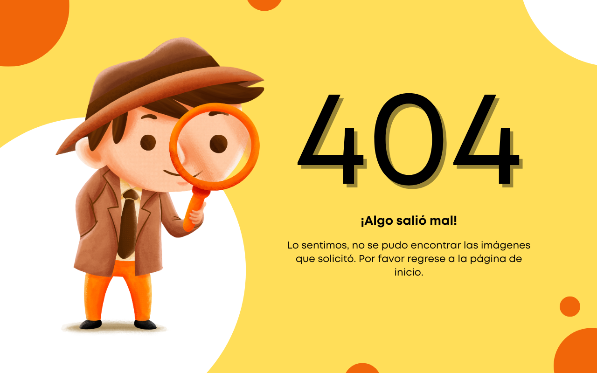

<section class="galeria">

    <div class="buscador">
        <div class="wave-group">
            <input required="" type="text" class="input" [(ngModel)]="query" name="query">
            <span class="bar"></span>
            <label class="label">
                <span class="label-char" style="--index: 0">N</span>
                <span class="label-char" style="--index: 1">a</span>
                <span class="label-char" style="--index: 2">m</span>
                <span class="label-char" style="--index: 3">e</span>
            </label>
        </div>
        <button type="button" (click)="searchImages()"><i class="fa-solid fa-magnifying-glass"></i></button>
    </div>
            
    @if (fotos.length > 0) {
        <div class="cards">
            @for (item of fotos; track $index) {
                <div class="card" gallerize>
                    
                </div>
            }
        </div>
    }@else {
        <div class="error">
            
        </div>
    }
</section>